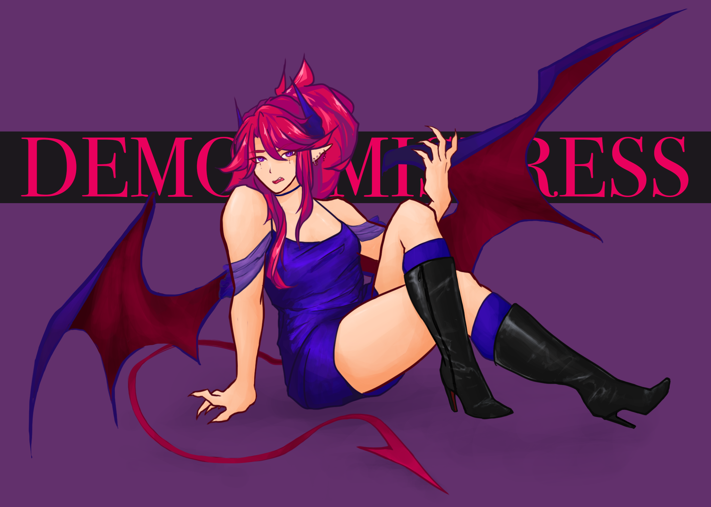
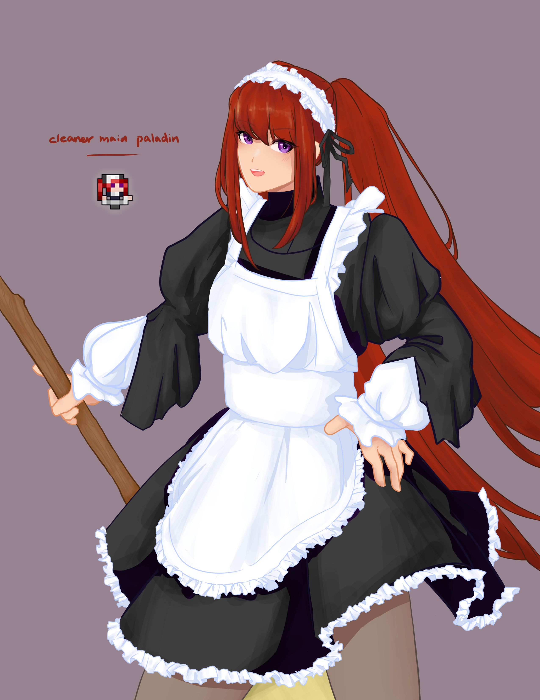
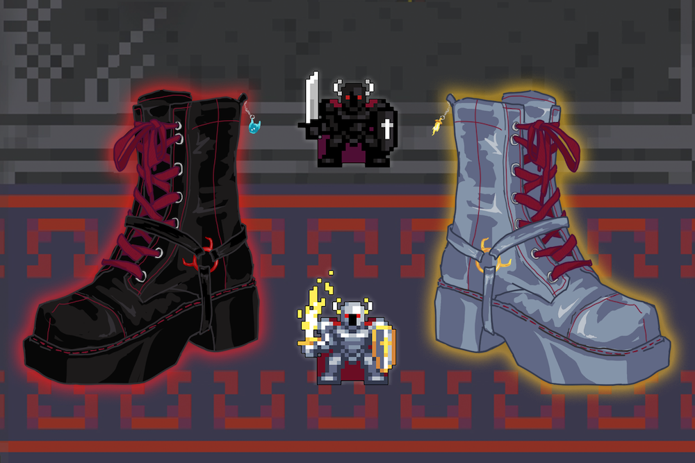
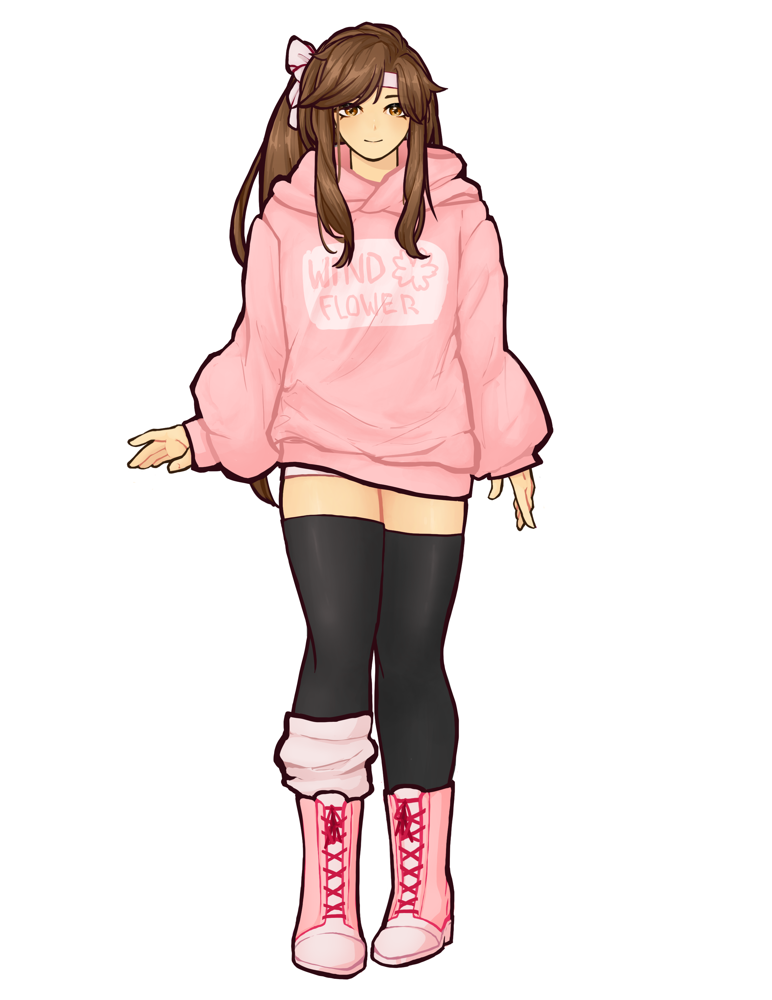

detailed style examples

thessal, winter wonder | rotmg fanart
demon mistress pet skin | rotmg fanart
cleaner maid paladin | rotmg fanart
oryx boot | rotmg fashion
vtuber model, windflower | rotmg inspo

vtuber model, thessal | rotmg inspo
My style does vary, and "detailed" could be more or less so. I think the most intricate work is likely the vtuber models I've done.
Curious to see the vtuber models in action? Check out my Twitch.
Adobe Photoshop